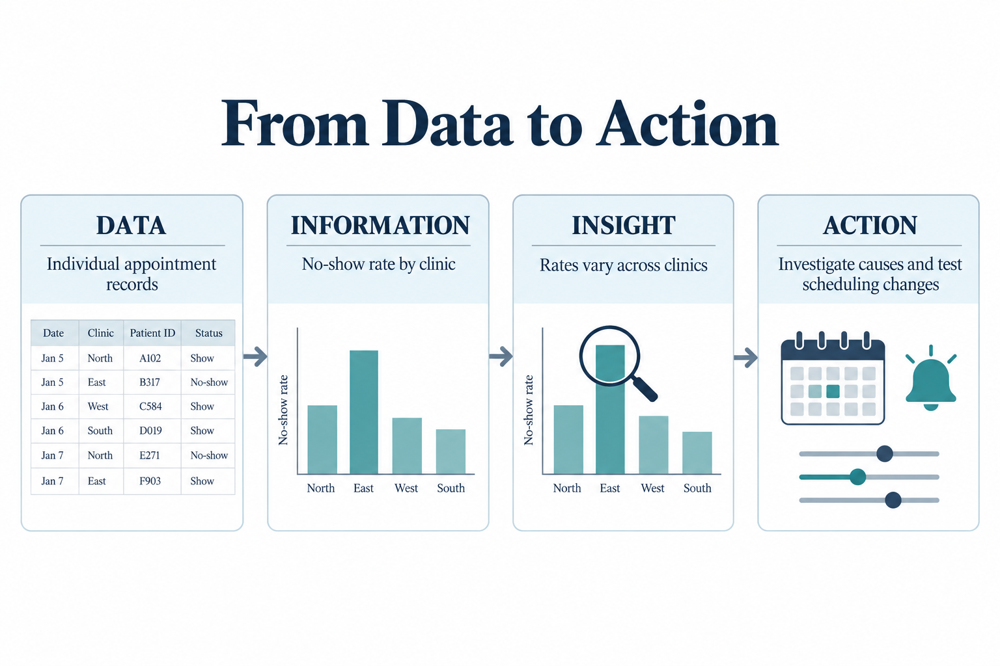
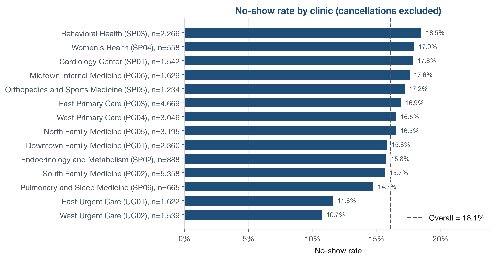
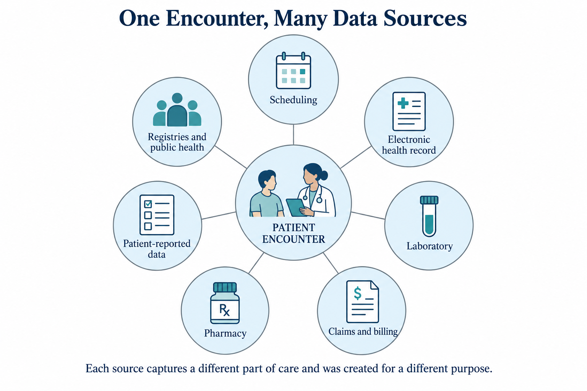
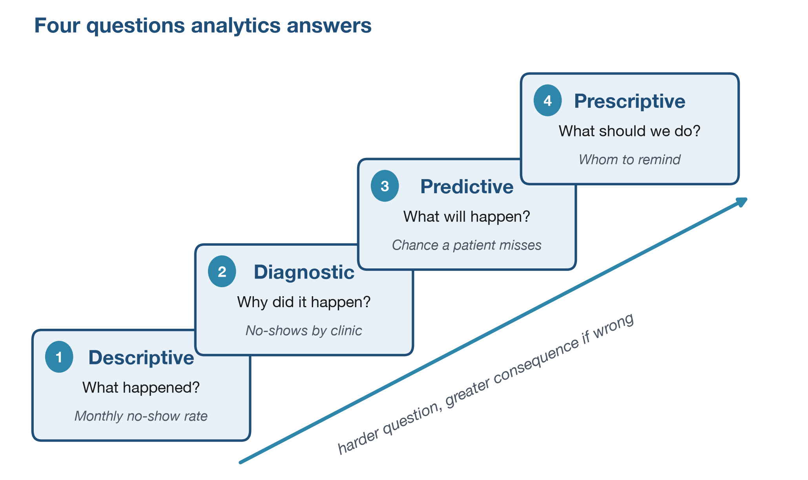
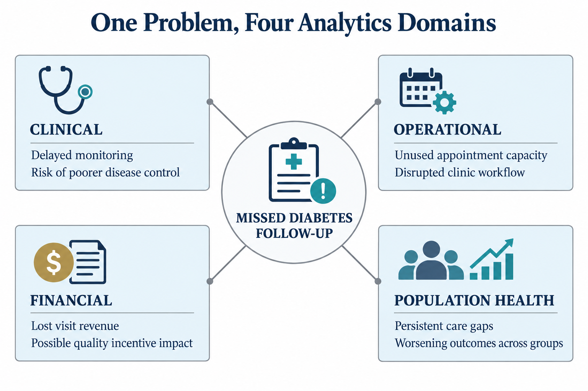
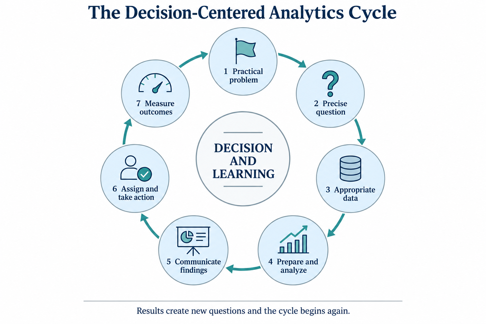

What Healthcare Data Analytics Is and Why It Matters
Opening scenario
On Monday morning, the director of a community clinic reviews the weekly performance report and finds two concerns:
- The clinic’s no-show rate has risen for three consecutive months.
- The average wait for a same-week appointment has grown, even though the number of scheduled visits has not changed.
The organization is not short on data. It already holds appointment records, provider schedules, reminder logs, and patient survey responses. What it lacks is a reliable way to turn those records into trustworthy conclusions and defensible action. That gap, between raw records and informed decisions, is where healthcare data analytics begins. This chapter follows the first thread, the rising no-show rate; the wait-time question returns in later chapters on descriptive statistics and performance monitoring.
Table 1 shows a small sample of the appointment records the director
already holds, drawn from the book’s appointment dataset,
DS2_appointments_clean.csv. (The datasets in this book are
numbered DS1, DS2, and so on.) Each row is one scheduled visit, and the
Outcome column records whether the patient completed the
visit, cancelled it, or did not show. On their own, these rows answer no
question; the work of this book is to turn records like these into
decisions.
| Visit ID | Clinic | Visit type | Lead days | Reminder | Outcome |
|---|---|---|---|---|---|
| APT000126 | SP03 | Behavioral Health | 22 | Phone | Completed |
| APT010570 | PC03 | Acute | 3 | SMS | Completed |
| APT010617 | UC02 | Urgent Care | 0 | SMS | Completed |
| APT027760 | PC03 | Follow-up | 8 | Multi | Early cancel |
| APT022207 | SP03 | Behavioral Health | 11 | None | No Show |
| APT011862 | PC02 | Follow-up | 19 | SMS | Completed |
By the end of this chapter, you will be able to:
- Define the difference among data, information, insight, and action.
- Explain why healthcare is a distinctive and high-stakes analytics environment.
- Identify the major sources of healthcare data and why their origin matters.
- Distinguish descriptive, diagnostic, predictive, and prescriptive analytics.
- Recognize the major domains of healthcare analytics.
- Describe the role of the analyst in turning data into actionable decisions.
Key concepts
Healthcare analytics is the systematic use of data and statistical methods to analyze and interpret health-related information. It involves collecting, managing, and analyzing health data from many sources, such as electronic health records, claims data, and patient surveys, to derive insights that improve healthcare delivery, patient outcomes, operational efficiency, and decision-making.
The rest of this chapter takes that definition apart, one piece at a time.
Analytics earns its value when it informs a decision. A report that no one acts on may be accurate, but it has not changed anything yet.
Data, information, insight, and action
Four terms describe how raw records become decisions, and each one builds on the term before it.
- Data are raw observations. A single appointment date, a diagnosis code, or a payment amount is data. On its own, a data point says very little.
- Information appears when data are organized so that a pattern becomes visible. Grouping appointments by clinic and calculating the no-show rate produces information, not just a stack of records.
- Insight answers a question that matters. Learning that no-shows are more common at some clinics than others, and appear to rise with longer lead times, tells the organization something it did not previously know and points to where to look next.
- Action is the decision that follows. The clinic may shorten booking windows, change reminder timing, or adjust staffing.
Analytics is valuable only when it carries a problem through all four stages, from data to action, along a clear line of reasoning.

Before computing a rate, define it. A no-show is an appointment the patient neither attended nor cancelled. The no-show rate is the number of no-shows divided by the number of appointments the patient was expected to keep, that is, the completed visits plus the no-shows. Cancellations are excluded, because a cancelled visit is a different event with a different cause. Every no-show rate in this chapter uses this definition and covers the full period recorded in the dataset.
Figure 2 applies that definition to each clinic. Each row of the appointment file is one visit, which tells you almost nothing on its own. Grouped by clinic, a pattern appears: the no-show rate ranges from about 11 percent to 18.5 percent around an overall rate of 16.1 percent, with the two urgent care clinics sitting clearly below the rest. Whether the remaining gaps are large enough to act on, or are just noise given how few appointments some clinics have, is the question the rest of the analysis must answer. You will compute the overall rate behind the dashed line yourself in the Try It exercise later in the chapter.

What makes healthcare different from other analytics domains
Healthcare is not an ordinary business environment. In most industries, analytics serves efficiency and financial performance above all else. Healthcare pursues those goals too, but it carries obligations that few other sectors face: its decisions can affect patient safety, clinical outcomes, equity, trust, and legal compliance. The effort to close the gap between the care patients receive and the care they should receive has shaped health policy for decades (Institute of Medicine, 2001).1 A single dataset may serve clinicians, operations managers, finance leaders, public health teams, and patients at the same time, and each of them brings a different question and a different tolerance for risk.
Healthcare data is also unusually complex. A single patient may appear in appointment systems, electronic health records, laboratory systems, billing files, quality registries, and patient experience surveys. Terms are coded, workflows differ across settings, and privacy rules apply at every stage. This complexity means healthcare analytics can never be reduced to formula memorization. An analyst must ask what the data represents, who produced it, what part of care it reflects, and how much confidence the organization should place in the result. Learning continuously from routine data, rather than treating each report as a final answer, is the mark of a mature health system (Institute of Medicine, 2013).
Data sources in healthcare analytics
Healthcare data is generated wherever care is planned, delivered, paid for, or measured. Before trusting a data set, an analyst should know where it came from. The most common sources include:
- Administrative and scheduling systems, which record appointments, provider schedules, and reminders. The appointment records used throughout this book come from a source of this kind.
- Electronic health records (EHRs), which document diagnoses, procedures, medications, and clinical notes from each encounter.
- Laboratory and diagnostic systems, which store test orders and results.
- Claims and billing systems, which capture services rendered, charges, payers, and reimbursement.
- Pharmacy systems, which record prescriptions dispensed and refill patterns.
- Patient-reported sources, such as satisfaction surveys and intake questionnaires.
- Registries and public health datasets, which track specific conditions or population-level measures.
Every source was built to serve an operational purpose, rarely analysis, and that original purpose shapes what its data can and cannot tell you.

A billing system exists to secure payment, not to measure quality. Its data follows billing rules first, so a recorded code may reflect what is reimbursable rather than what is clinically most important. Always ask what a source was built to do before trusting it for analysis.
Chapter 2 examines these systems and their stakeholders in detail.
Descriptive, diagnostic, predictive, and prescriptive analytics
Analytics is not one activity. It is a family of approaches, each suited to a different kind of question. Four purposes are worth naming:
- Descriptive analytics reports what happened. A dashboard of monthly no-show rates or average wait times is descriptive.
- Diagnostic analytics looks for why it happened. Comparing no-show rates by clinic, payer group, or lead time surfaces associations worth investigating, but a comparison alone reveals patterns, not proven causes.
- Predictive analytics estimates what is likely to happen next. A model that estimates the probability that a scheduled patient will miss an appointment is predictive.
- Prescriptive analytics recommends what to do. Knowing which appointments are at high risk of being missed, a clinic might redesign its reminder workflow or overbook selected slots with care.
The four form a rising ladder, shown in Figure 4. Each level answers a more demanding question than the one below, and acting on a wrong answer carries greater consequence. Harder questions do not always need fancier methods; a careful diagnostic study can be more demanding than a quick prediction. The same no-show problem can be met at any level: describe the rate, examine where it is higher, estimate who is likely to miss, or decide whom to remind.

Clinical, operational, financial, and population health analytics
Analytics also varies by domain. Four domains cover most of the work:
- Clinical analytics focuses on care processes and outcomes, such as readmissions, complications, or screening completion.
- Operational analytics focuses on the flow of work, including appointment access, staffing, throughput, and bed use.
- Financial analytics addresses reimbursement, denials, payer mix, and margin.
- Population health analytics looks across groups rather than single visits, asking whether prevention, chronic disease management, and outreach are working.
These domains overlap. A rise in emergency department length of stay is operational, but it carries clinical consequences and financial effects as well. A missed diabetes follow-up appointment looks operational at first, yet repeated missed visits can weaken quality performance and worsen long-term outcomes. A capable analyst does not read a metric in isolation; the skill lies in seeing how measures connect across the system.

The same four purposes apply well beyond the clinic. A health plan watching its claim denial rate can describe the rate month over month, examine which claim types and submitting sites are associated with denials, estimate which pending claims are most likely to be denied, and decide which to review before submission. The framework travels; only the data and the decision change.
How analysts improve decisions, performance, and outcomes
Analytics is often pictured too narrowly, as the work of calculating averages and producing charts. The real task is broader: translate a practical problem into a precise question, identify the right data, prepare it carefully, analyze it responsibly, and communicate the result in language that supports a decision. The analyst is the bridge between raw records and organizational action, and organizations that build this capability deliberately tend to outperform those that treat analysis as a series of one-off reports (Davenport & Harris, 2007).

This book uses Excel because it is accessible, widely available, and well suited to the core analytic workflow. You will import data, clean it, summarize it, visualize it, and examine relationships through linear and logistic regression. The aim is not to memorize spreadsheet commands. The aim is to think analytically in a healthcare setting, to communicate findings clearly, and to recognize the limits of your own conclusions.
This short exercise turns a small appointment file into a single
number, the overall no-show rate, using only Excel’s menus. No formulas
and no prior Excel experience are needed. You will work with a 12-row
teaching sample, DS2_appointments_sample.csv, so the whole
file fits on one screen. Remember the definition: cancellations do not
count, so you will hide them first.
- Start Excel. Choose File > Open, browse to
datasets/DS2_appointments_sample.csv, and click Open. Twelve appointment records fill the grid, with the column headings in row 1. Each row is one scheduled visit, and theNo-show flagcolumn (column G) holds a 1 for every no-show and a 0 for every other outcome. - Click any cell inside the data. On the Data tab of the Ribbon, click Filter. A small drop-down arrow appears on each heading in row 1.
- Click the arrow on the
Outcomeheading (column F). Untick (Select All), tick only Completed and No Show, and click OK. The two cancelled appointments are now hidden, which matches the definition. - Click the G column letter at the top of the grid to
select the whole
No-show flagcolumn. - Look at the status bar along the bottom of the Excel window. It shows Average for the numbers you selected. Because the column is 1 for no-shows and 0 otherwise, that average is the no-show rate.
- Read the value: 0.2, or 20% (2 no-shows out of 10 expected visits).
- Notice this is higher than the roughly 16 percent for the full clinic in Figure 1.1. That is the point: with only 10 expected visits, one or two no-shows swing the rate a lot. Small samples are noisy. Before drawing any conclusion, write down the first three questions a clinic manager should ask about this number.
The solution is in the Answer key at the end of the chapter. In Chapter 10 you will learn to calculate the rate for every clinic at once, on the full 36,000-row appointment file.
Optional: your first Excel formula. The Try It above used only menus, with no typed formulas, because that is all Chapter 1 needs. If you would like an early taste of a formula, try this on a blank sheet; it also brings the data-to-information idea back to life.
- In A1 type
Height (cm), in B1 typeWeight (kg), and in C1 typeBMI. - In A2 enter a height in centimeters and in B2 a weight in kilograms; use your own measurements if you like.
- In C2 type
=B2/(A2/100)^2and press Enter. Excel returns the body mass index, a common clinical measure. - Add a second person’s numbers in row 3, then copy the formula down by double-clicking the small square at the bottom-right corner of C2 (the fill handle).
A single BMI value is only data. It becomes information when you compare it against clinical ranges, and insight only when it helps answer a question about a specific patient. The ladder from earlier in this chapter, data to information to insight to action, applies to one number just as it does to a table of thousands.
It helps to think of the four purposes as a rough progression rather than a menu of equals. Most everyday work sits on the first two: describing what happened and examining why. Prediction and prescription usually come later and carry greater consequence when they are wrong, which is why this book develops them in the regression chapters (Chapters 12 and 13). Reaching for prediction before the descriptive picture is trustworthy is a common way to produce results that look confident but are wrong.
The following is an illustrative scenario, not a specific organization. A regional health system invests in a polished dashboard that tracks monthly no-show rates by clinic. It is color-coded, refreshed automatically, and praised in leadership meetings. A year later, the no-show rate has not moved. The dashboard measures the problem accurately, but no one has been assigned to act on it, and it is never tied to a specific operational decision such as adjusting reminder timing or revising booking windows. The lesson is not that the dashboard was poorly built. It is that analysis without an owner and a decision produces monitoring, not improvement. Every reporting product should name the decision it is meant to inform and the person accountable for acting on it.
- Analytics turns data into information, information into insight, and insight into action; the value is in the whole chain, not any one step.
- Healthcare is a high-stakes, high-complexity environment, so clinical context, data quality, and privacy matter at every step.
- Descriptive, diagnostic, predictive, and prescriptive analytics answer four different kinds of question.
- Clinical, operational, financial, and population health analytics are overlapping domains, and a good analyst sees how they connect.
- A good analyst states the limits of a result as clearly as the result itself.
A primary care clinic is tracking missed appointments. Give one concrete example of each link in the chain: a piece of data, a piece of information, an insight, and an action the clinic could take.
Name two obligations that make healthcare analytics different from analytics in a typical commercial setting.
Classify each of the following as descriptive, diagnostic, predictive, or prescriptive analytics:
- a monthly no-show dashboard
- a comparison of no-show rates by clinic and lead time
- an estimate of the chance that a scheduled patient will miss
- a rule for cautiously overbooking high-risk slots
For a rising no-show rate, name one clinical, one operational, and one financial consequence.
Explain in two sentences why a correct average can still fail to support a decision.
A billing (claims) system is built to support payment. State its primary purpose in one phrase, and explain one way that purpose could bias a quality measure, such as diabetes control, that is built from its data.
Repeat the Try It on
DS2_appointments_sample.csv, but before you read the status bar, also filter theCliniccolumn to a single clinic (for example, SP03). Compare that clinic’s no-show rate with the overall 20 percent, and say how much you trust it given the number of appointments involved.
Try It. After filtering the sample to Completed and
No Show, the Average of the No-show flag
column shown in Excel’s status bar is the no-show rate for the sample,
20 percent (2 no-shows out of 10 expected visits): the
column is 1 for a no-show and 0 for every other outcome, and the two
cancellations are hidden. That 20 percent sits above the roughly 16
percent for the full clinic in Figure 1.1, which is exactly what a small
sample does: with only 10 expected visits, one extra no-show moves the
rate by 10 points. Three questions worth asking before acting: is this
rate based on enough appointments to trust, or could it swing widely by
chance; is it explained by something other than the clinic, such as lead
time or payer mix; and what action is actually available if the pattern
holds up on the full file. The number is the start of the reasoning, not
the end.
Selected exercises. (1) For example: data is one
appointment’s outcome; information is the clinic’s monthly no-show rate;
insight is that no-shows rise when lead times are long; action is to
shorten booking windows or change reminder timing. (2) Any two of:
decisions can affect patient safety, clinical outcomes, equity, trust,
or legal compliance. (3) a, descriptive; b, diagnostic; c, predictive;
d, prescriptive. (4) For example, clinical: a missed follow-up delays
needed care; operational: an unused slot wastes capacity; financial: the
visit revenue is lost. (5) A correct average can still mislead if it
hides variation between groups, rests on too few cases to be reliable,
or answers a different question than the decision requires. (6) The
billing system’s purpose is to secure payment; a measure built from it
may capture only what is coded for reimbursement and miss the clinical
detail a diabetes-control measure actually needs, such as recent lab
results. (7) Adding a second filter on the Clinic column
and reading the status-bar Average gives that clinic’s rate; in the
sample, SP03 shows about 67 percent (2 no-shows out of 3 visits). You
should trust that number very little: three appointments is far too few
to estimate a rate, which is the small-sample caution from the Try It
taken to its extreme.
- Davenport, T. H., & Harris, J. G. (2007). Competing on analytics: The new science of winning. Harvard Business School Press.
- Institute of Medicine. (2001). Crossing the quality chasm: A new health system for the 21st century. National Academies Press.
- Institute of Medicine. (2013). Best care at lower cost: The path to continuously learning health care in America. National Academies Press.
- National Academies of Sciences, Engineering, and Medicine. (2018). Crossing the global quality chasm: Improving health care worldwide. The National Academies Press.
- Data
- Raw observations, such as a single appointment date, diagnosis code, or survey response.
- Information
- Data organized so that a pattern can be seen, such as a monthly no-show rate.
- Insight
- An answer to a question that matters, such as learning that no-shows are more common at some clinics than others.
- Action
- A decision or change made in response to insight, such as adjusting reminder timing.
- Descriptive analytics
- Analysis that describes what happened.
- Diagnostic analytics
- Analysis that explores why something happened.
- Predictive analytics
- Analysis that estimates what is likely to happen next.
- Prescriptive analytics
- Analysis that recommends what action to take.
- Clinical analytics
- Analysis focused on care processes and outcomes.
- Operational analytics
- Analysis focused on the flow of work, such as access, staffing, and throughput.
- Financial analytics
- Analysis focused on reimbursement, denials, payer mix, and margin.
- Population health analytics
- Analysis that looks across groups rather than single visits.
The Institute of Medicine was renamed the National Academy of Medicine in 2015; works published under the earlier name keep that attribution.↩︎